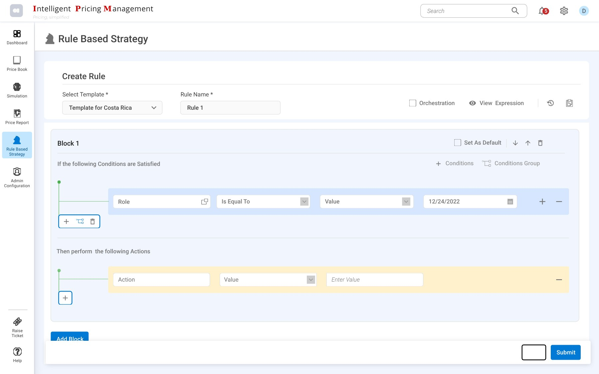
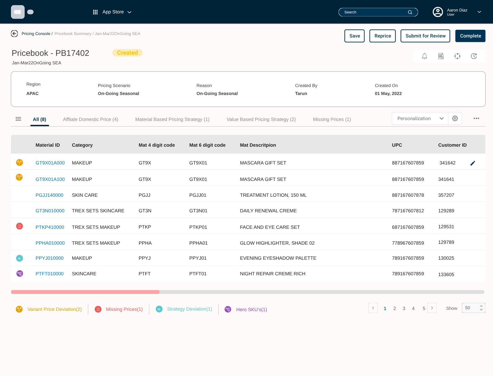

PRICING IS A CHAIN OF DECISIONS.
IPM is Incture's cloud product for setting prices across products and services: the base price, the discounts, and the approvals before a price goes live. A pricing manager raises a price change request (PCR), simulates it, validates it and sends it for approval.
ELC needed the same thing at a much larger scale for travel retail. Its pricing team was setting prices for many brands, retailers and countries, across systems that weren't connected. The project's design document lists what was missing: no way to reprice a price book already in use, no way to define a strategy for materials with a missing price, and no review of prices before they reached SAP.
The Problem
Give pricing teams one place to build, check and approve prices, when every price depends on brand, market, retailer, currency and rules.
WHAT WAS WRONG WITH THE PRODUCT WE HAD.
Before redesigning IPM, we reviewed the existing product screen by screen and wrote down each issue next to its fix. A few of them:
- Deep navigation. Frequent actions sat several levels down, so first-time and occasional users struggled to find them. We moved to a shallow, broader structure with task-based labels.
- Misleading labels. A tab called "Pricing Summary" actually showed draft requests. Drafts and "Create or manage PCR" became separate tabs, and global search moved into the main navigation.
- Modals on top of modals. Users lost their place. Inputs moved into dropdowns inside the page, and switching tasks now asks whether to save or discard changes.
- No feedback. After creating a request, nothing on screen confirmed it; the only signal was an email. The new design shows the new draft right away.
- Jargon and weak hierarchy. "Variant Manager" was replaced with plain column controls, and the main action became more prominent than "Clear all."
We also studied six pricing products, including Zilliant, Vendavo and Pricefx, for their goals, features and what was worth learning from, and we defined three user profiles with their task flows: the pricing manager, the approver and the business admin.
From the audit: one issue, its outcome and the solution
Issue
What is wrong, in the words of the screen.
Outcome
What it costs the people who use it.
Solution
The change, written next to the problem it answers.
THREE DECISIONS THAT SHAPED THE PRODUCT.
Decision 01
Reuse Where the Job Is the Same
The approver's screens follow the screens of Cherrywork's task management product, which handles approvals across Incture's apps. The pricing manager's flow has its own screens, and the file counts which ones are unique and which are reusable.
People who already approve tasks in Cherrywork approve prices the same way.
Screen: Price book, with the PCR life cycle beside it

Requests with their status
Active, in progress, discarded, revoked and approval pending.
The life cycle in place
Each step of a request, with its time, next to the list.
Pinned, all or shared
Three ways to narrow the list at the top.
Decision 02
Rules People Can Read
IPM lets a business admin define pricing rules as "If the following conditions are satisfied, then perform the following actions," with templates, search parameters and strategy mapping. The price report shows three recommended prices: historical, cost-plus and rule-based.
The logic behind a price is written in a form a pricing manager can read and check.
Screen: Rule-based pricing strategy

If, then
Conditions and actions, in a sentence a pricing manager can read.
Blocks
More blocks can be added, each with its own conditions and actions.
Check the expression
View Expression shows the rule as the system will run it.
Screen: Price book as cards

Cards or a table
The same requests in two views, switched at the top right.
Status on each card
Draft, discarded, in progress or active.
Filters stay visible
The active filter sits above the results, with a way to clear it.
Decision 03
A Review Before Anything Reaches SAP
For ELC, every price book moves through clear statuses: under validation, created, in review, reviewed, active, and synced to SAP. A peer reviewer checks it before it goes to SAP. Finance leaders get read-only access to reports, and only the pricing roles can change prices.
The pricing console supports two ways to start a price book, with a different journey for each: let the system build it from the rules, or upload a template. Value-based and material-based strategies, FX rates, savings percentages and rounding rules each have their own screen.
Screen: An ELC price book, before review

Submit for review
The price book goes to a reviewer before it is completed.
What needs a look
Missing prices and strategy deviations are flagged, with counts.
Reprice in place
A price book already in use can be repriced from the same screen.
RESEARCH TO HANDOFF.
The product file runs from research to lo fi, mid fi and hi fi screens, then to a handoff page for development. We held design critique sessions where the team presented the audit, the old and new structure, the user profiles and the task flows. The ELC prototype has its own page for changes made after the client's feedback, and the design workbook keeps the open questions for ELC's master data and pricing teams.
WHAT WAS DESIGNED.
3
User profiles with task flows: pricing manager, approver and business admin.
6
Pricing products studied before the redesign.
3
Recommended prices on the price report: historical, cost-plus and rule-based.
2
Ways to start an ELC price book: system-driven or uploaded template.
This page reports scope, not measured results.